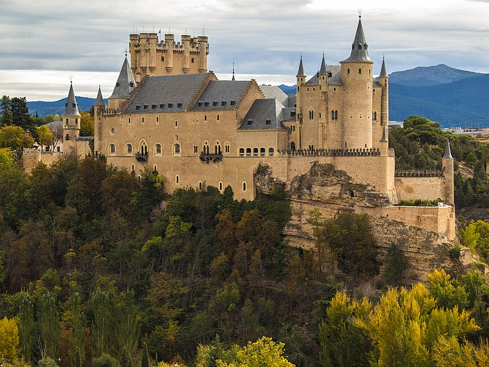

Fortalezas del mundo
El castillo de Bellver
 El castillo de Bellver es una fortificación de estilo gótico situada a unos tres kilómetros de la ciudad
española de Palma de Mallorca, en Baleares. Fue construido a principios del siglo xiv por orden del rey
Jaime II
de Mallorca. Se encuentra sobre un monte de 112 metros sobre el nivel del mar, en una zona rodeada de
bosque,
desde donde se puede contemplar la ciudad, el puerto, la sierra de Tramontana y el Llano de Mallorca; de
hecho,
su nombre viene del catalán antiguo bell veer, que significa «bella vista». Una de sus peculiaridades es que
se
trata de uno de los pocos castillos de toda Europa de planta circular, siendo el más antiguo de estos.
Actualmente pertenece al Ayuntamiento de Palma, y en él se encuentra el Museo de Historia de la ciudad de
Palma,
por lo que está abierto al público.
El castillo de Bellver es una fortificación de estilo gótico situada a unos tres kilómetros de la ciudad
española de Palma de Mallorca, en Baleares. Fue construido a principios del siglo xiv por orden del rey
Jaime II
de Mallorca. Se encuentra sobre un monte de 112 metros sobre el nivel del mar, en una zona rodeada de
bosque,
desde donde se puede contemplar la ciudad, el puerto, la sierra de Tramontana y el Llano de Mallorca; de
hecho,
su nombre viene del catalán antiguo bell veer, que significa «bella vista». Una de sus peculiaridades es que
se
trata de uno de los pocos castillos de toda Europa de planta circular, siendo el más antiguo de estos.
Actualmente pertenece al Ayuntamiento de Palma, y en él se encuentra el Museo de Historia de la ciudad de
Palma,
por lo que está abierto al público.
El alcázar de Segovia
 El Alcázar de Segovia, que data de principios del siglo xii, es uno de los castillos medievales más famosos del mundo y uno de los monumentos más visitados de España. Por sus estancias han pasado veintidós reyes, además de algunos de los personajes más destacados de la historia. Su imponente perfil se levanta, majestuoso, sobre el valle del Eresma y es símbolo de la Ciudad vieja de Segovia, declarada Patrimonio Mundial de la Unesco en 1985. Palacio y fortaleza de los Reyes de Castilla, su traza refleja el esplendor de la corte durante el medievo, y sus muros han sido testigos de batallas, intrigas palaciegas, bodas reales y sucesos asombrosos. En su milenaria existencia, el Alcázar ha sido castro romano, fortaleza medieval, palacio real, custodio del tesoro real, prisión de estado, Real Colegio de Artillería y Archivo General Militar.